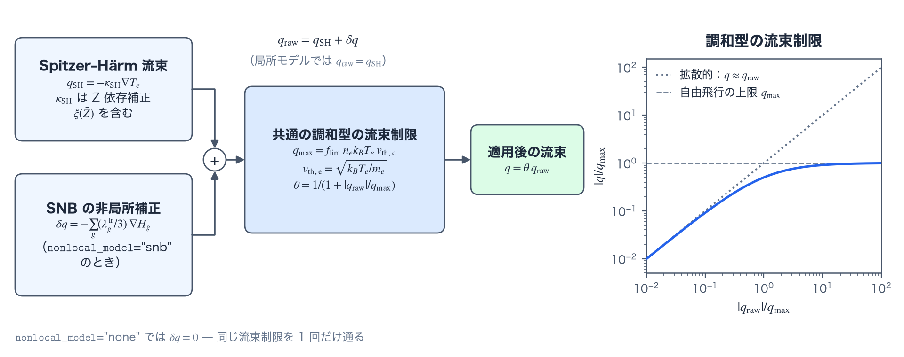

局所 Spitzer–Härm モデルと流束制限
電子熱伝導の局所モデルは、Z 依存の γ0 補正（Z-dependent γ0 correction）を常に含む Spitzer–Härm（SH）伝導率と、調和型の流束制限（harmonic flux limiter）から成る。この頁は、伝導率の式、流束制限の式、1D と 2D RZ での流束制限の適用を定義する。物理機構は概要の頁、非局所補正はSNB の頁にある。
伝導率と流束制限の式
電子伝導率は cgs + eV 単位系で次のように評価する。平均電離度（mean ionization）\(\bar Z\) には物性モデルの値を使う。クーロン衝突の頻度を支配するのは電荷の 2 乗平均なので、電荷モーメント比（charge-moment ratio）\(r_2=\langle Z^2\rangle/\bar Z^2\) が得られる材料では、\(\bar Z\) を衝突実効電荷（collisional effective charge）\(\bar Z r_2\) に置き換える。電荷モーメントの表から \(r_2\) を得る経路は 1D_SPH だけなので、2D RZ の電子伝導は \(\bar Z\) のままである（EOS・不透明度・電離参照）。
$$ \kappa_{SH}=\kappa_0\,\xi(\bar Z)\, \frac{T_e^{5/2}}{\bar Z\ln\Lambda},\qquad \xi(Z)=\frac{(Z+0.24)/(Z+4.2)}{(1+0.24)/(1+4.2)}, $$ $$ \kappa_0=3.06\times10^9 \;\mathrm{erg/(cm\,s\,eV^{7/2})},\qquad \mathbf q_{SH}=-\kappa_{SH}\nabla T_e. $$ここで \(\kappa_0\) は cgs + eV 単位系での Spitzer 前置係数、\(\xi(\bar Z)\) は下の箇条書きで詳述する Z 依存補正、\(\ln\Lambda\) はクーロン対数（Coulomb logarithm）、\(\mathbf q_{SH}\) が得られる制限前の熱流束である。
1D では流束制限を面ごとに適用する。面の電子密度と温度（いずれも左右セルの算術平均）と、その温度から求めた熱速度から \(q_{max}\) を作り、機構節で述べた調和合成の形で制限する（\(k_B\) は cgs + eV 単位系の常として eV→erg の換算定数 eV_to_erg である）。
2D RZ では、流束制限をセルごとに適用する。そのセルの電子密度と温度から \(q_{max}\) を作り、セルの温度勾配の大きさ \(|\nabla T_e|\)（セルの節点の勾配の大きさの平均）から \(q_{raw}=\kappa_{SH}|\nabla T_e|\) を作って、セルの実効伝導率 \(\kappa_{eff}=\theta\kappa_{SH}\) を求める。
- \(\xi(Z)\)：γ0(Z) は Braginskii 輸送理論の無次元電子熱伝導係数（dimensionless electron heat-conduction coefficient。Spitzer 型伝導率の前置数。Z=1 で 3.16）であり、ξ(Z) はその Z 依存を Z=1 で 1 になるよう規格化した Epperlein–Short の近似式である（ξ(1)=1、ξ(∞)=4.19）。Z=1 の成分（3.16）は κ0 に折り込み済みである。ξ(Z) は 1D と 2D、材料別の保存モード、SNB の基底となる SH 流束を含むすべての経路で適用され、無効にする設定はない。
- \(q_{max}\) と \(\theta\)：\(q_{max}=f_{lim}n_ek_BT_ev_{th,e}\) が自由飛行の流束に対する割合を定め、θ が調和的な補間を与える。局所経路は \(q_{raw}=q_{SH}\)、SNB は \(q_{raw}=q_{SH}+\delta q\) を使う。SH と SH+δq が二重に制限されることはなく、通るのはひとつの共通した流束制限だけである（図A）。
- 面の伝導率の作り方：1D で面の κ を左右セルの値からどう作るかは
face_kappa_policyが決める（既定は Kirchhoff 割線kirchhoff_same_material）。定義と式は用語の節、使い方は面の伝導率の節にある。制限に使う SH の推定値と、実際に適用する流束は、常に同じ面の κ を使う。 - ボイド：
cell_is_voidは κeff=0 を強制して断熱境界を作り、下限密度しかもたない外側のセルが陽的な安定限界（explicit stability limit） Δtexp を潰してしまうのを防ぐ。SNB ではボイドを恒等行とし、隣接する群の拡散係数を 0 にする。 - SNB の群：電子エネルギーを温度で規格化した β̂=E/(kB max Te) について、最も低い群を [0, 0.1] とし、それより上の群境界は 0.1 から
snb_E_max_over_Teまでの等比数列で張る（既定の 24 群では、等比の区間が 23）。各群の重み（group weight）ξg=P(βg)−P(βg−1) は、原始関数（antiderivative）の厳密な差として作る。平均自由行程には、既定のgeometric_r2と Schurtz の原型の 2 通りがある。群と重みの定義は用語の節、群境界と重みの図は図Bにある。 - iSNB のピカール反復：Cao 2015 型の連成は (θ, δq) を固定したうえで、\(T_e^n\) から STS の大ステップ（superstep）を繰り返し、補正を計算し直す。最低 2 回は反復し、流束の最大ノルム（maximum norm）の相対許容値で収束を判定する。収束したときの増幅率（amplification factor）は任意の Δt で (0,1) に入り、無条件安定（unconditionally stable）である。反復の定義は用語の節にある。

nonlocal_model="none" では δq=0 となり、局所モデルの制限付き SH 流束に戻る。右：流束制限の応答 |q|/qmax=x/(1+x)（x=|qraw|/qmax、青の実線）。点線は拡散的な極限 q≈qraw、破線は自由飛行の上限 qmaxで、実線はどの x でも両者の下にある。namelist による制御
以下は Numerics.conduction のうち、局所モデルのキーである。全項目と検証規則は namelist リファレンスを参照のこと。表の既定値は、デッキで指定しないときの値である。Studio が書き出す値がこれと違うのは f_lim だけで、SNB を選ぶと 0.5 になる。
| キー | 既定値 | 用途 |
|---|---|---|
conduction.enabled | True | 電子熱伝導の演算子全体を有効化。 |
f_lim | 0.06 | 局所モデルと SNB が共通に使う、調和型の流束制限の係数（自由飛行の流束に対する割合）。SNB では、非局所効果を調整する値ではなく、異常な合成流束を止める上限として 0.5 を明示する（GUI は自動で切り替える）。 |
検証
- SNB を切った計算との一致：
nonlocal_model="none"のとき、GXII の FLD の 6 つの指標が、SNB を足す前の局所モデルの計算とビット単位で同一（相対差 0）に保たれる。
参考文献
- L. Spitzer, Jr. and R. Härm, "Transport Phenomena in a Completely Ionized Gas," Phys. Rev. 89, 977–981 (1953). doi:10.1103/PhysRev.89.977
- S. I. Braginskii, "Transport Processes in a Plasma," Reviews of Plasma Physics 1, 205–311 (1965).
- E. M. Epperlein and R. W. Short, "A Practical Nonlocal Model for Electron Heat Transport in Laser Plasmas," Phys. Fluids B 3, 3092–3098 (1991). doi:10.1063/1.859789